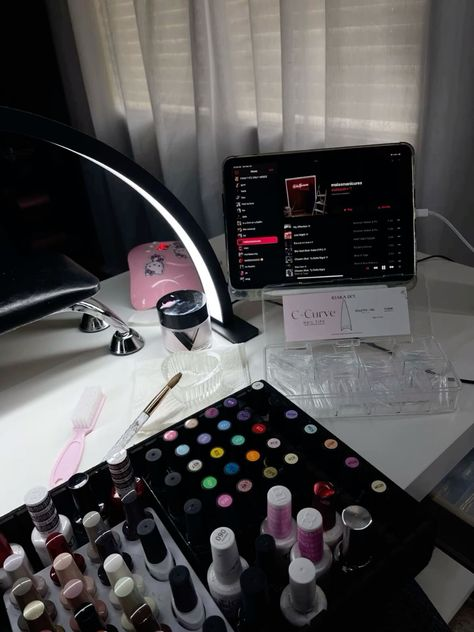
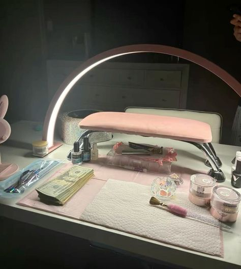

Support takes you far
When I first started doing nails my mother was my biggest support and she never once stopped supporting me. I started with cheaper products jyst to learn the ropes such as what to do. Once my friends allowed me to practice on them multiple times I then gained more confidence and started doing longer nails and even different shapes such as duck!


CC0 (Public Domain Dedication)
being given support by my family and friends allowed me to keep going and it made me feel better about my work, although I havent doen nails in a while to focus on hair more for the past year it is always muscle memory to me now and I love the nail salon owners that allowed me to learn from them and ask questions without feeling bad.
Moral of the story If you want to get into a hobby or an extracirrucular that van turn into a job, DO IT! support yourself before anyone else an put you down regardless of the setbacks dont give up on what you want to succeed in, no matter how many people may tell you otherwise
back to homepage.